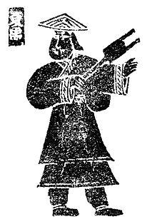
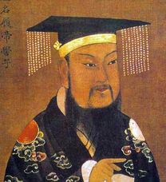
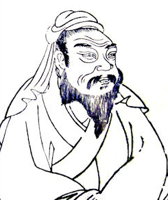
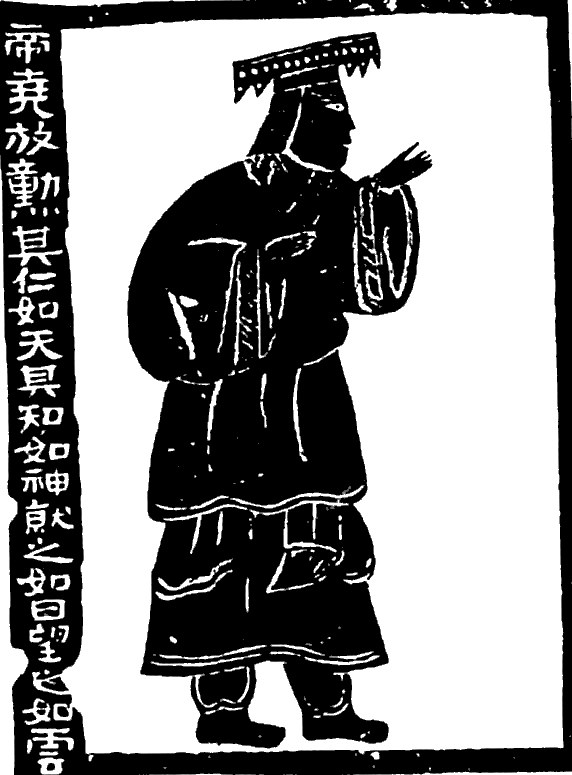
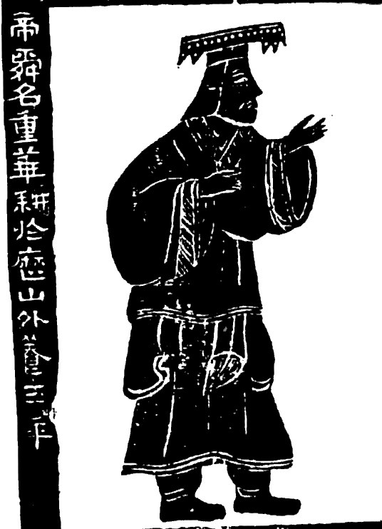
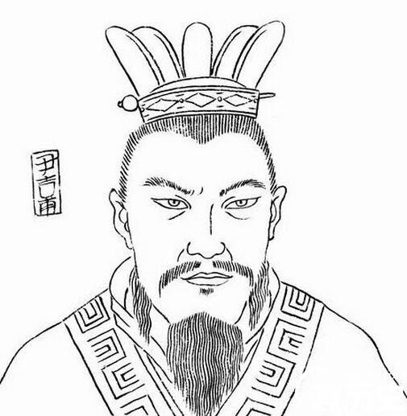
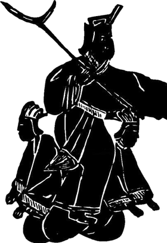
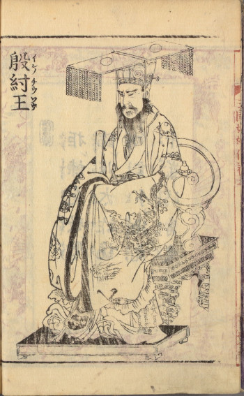
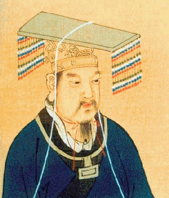

Exam 2
House of Mo 墨
Open now
Study the Mozi packet (September 24), read against Kongzi.
In early China, a shi 士 was a person of learning who could be called to advise a ruler. On October 20 you speak at the Emperor's court. Before you do, you qualify as a shi.
You qualify by passing six Scholar Exams in Canvas: one for each house you read, and one on early China itself. Have the reading open while you take them. That is how they are meant to be taken.
Each exam opens on the day we finish its reading. You will find them in Canvas, under Modules. The reading for each day is linked in the syllabus.
Open now
Study the Mozi packet (September 24), read against Kongzi.
Opens September 29
Study the Laozi and Zhuangzi packets, read against Kongzi, Mozi, and Mengzi.
Opens October 1
Study Kongzi, Mengzi, and Xunzi. It opens once we have read Xunzi.
Opens October 1
Study the Han Feizi and Lord Shang packets, read against Ru, Mo, and Dao.
Opens October 8
Study the Ancient China pages. Every question comes from them.
Opens October 13
Study Ebrey pp. 56–74 and 103–105, Mouzi and Huiyuan, and Wŏn'gwang.
The four house exams ask the same kinds of questions. Whose words are these? How would this house answer the Emperor? What does this passage claim? How does the house reply when a rival attacks it?
This exam is about the dynasties, the people who founded and destroyed them, Yao and Shun, the Duke of Zhou, and the teachers and books. All of it is on three pages. Keep them open while you take it.



The class chart: books, teachers, founders, enders, dynasties, and cities, left to right in time. Click any name.



Yao and Shun, then Xia, Shang, and Western Zhou side by side: each founder, each last ruler, and the stories told about them.



24 practice questions on the same chart. Try it before you try the exam.
Can you put them in order and place 771 BCE?
Who founded each dynasty, who lost it, and what story is told about the fall?
How did Yao choose Shun, and what changed after Yu? What did the Duke of Zhou do that Wen and Wu did not?
Who was born first? Which house does each teacher belong to? Which book is which?
Read the note on your wrong choice. It tells you which page and which row to go back to.
King Zhòu 紂 lost the Shang. The Zhou 周 dynasty replaced him. Tang the Accomplished is not the Tang dynasty.
On Early China you may drag names into order or sort them into groups. Every piece has to be in the right place.